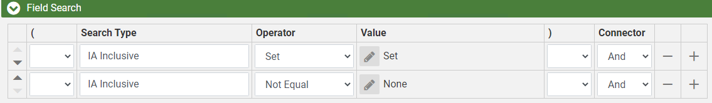
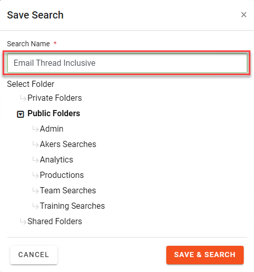

Open the Advanced Search window to create a new Field Search. Include Families on the search by ensuring Family is selected from the drop-down.

The criteria of the search should identify
all documents that received an IA Inclusive value and include their
families. This can be accomplished with the
following criteria. For more information about the IA Inclusive field and other email threading fields, see

Click  and provide a name for the search. For example you could name the search Email Thread Inclusive.
and provide a name for the search. For example you could name the search Email Thread Inclusive.

When creating a new Active Learning Disabled Review Pass use your
Advanced Search for the documents to be batched. See
|
|
Note: When creating an Email Thread Inclusive review batch the following fields should be selected:
|